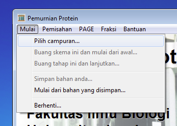
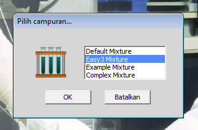
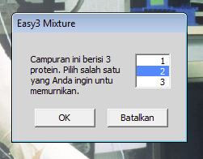
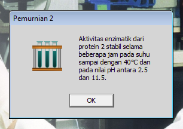
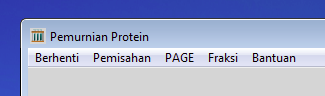

latihan berikutnya
latihan berikutnya
Latihan 1 dari 6
Memulai dengan Campuran Protein Sederhana

Sebagian pilihan pada baris berwarna abu-abu di bagian atas belum bisa dipilih.
Hanya pilihan Bantuan dan Mulai yang berisi pilihan selanjutnya yang dapat dipilih. Klik pada kata Mulai.
Kemudian klik pada kata-kata Pilih campuran...

Anda seharusnya memulai dengan campuran yang hanya mengandung beberapa protein dan melaksanakan percobaan dengan campuran itu. Daftar campuran protein yang tersedia mungkin tidak sama persis dengan daftar dalam gambar ini, tetapi di daftar yang anda punya seharusnya mengandung pilihan yang disebut Easy3_Mixture. Pilih campuran ini dan klik pada tombol OK.

Sesuai dengan angka dalam namanya, campuran ini mengandung tiga protein. Anda harus memilih protein nomor berapa yang ingin anda murnikan. Klik dalam kotak putih untuk memilih protein 2 (atau pakai tombol pengarah) dan kemudian klik pada tombol OK.

Protein 2 tersebut memiliki aktivitas enzim dan akan muncul informasi tentang stabilitasnya. Untuk sementara, abaikan informasi ini dan klik pada tombol OK saja.

Tampilan pada layar akan menjadi kosong dan pilihan di baris abu-abu akan berubah. Pada saat ini, anda dapat melaksanakan percobaan dengan campuran protein itu.